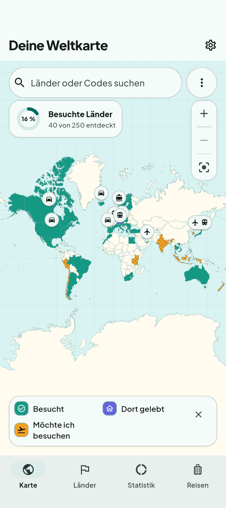
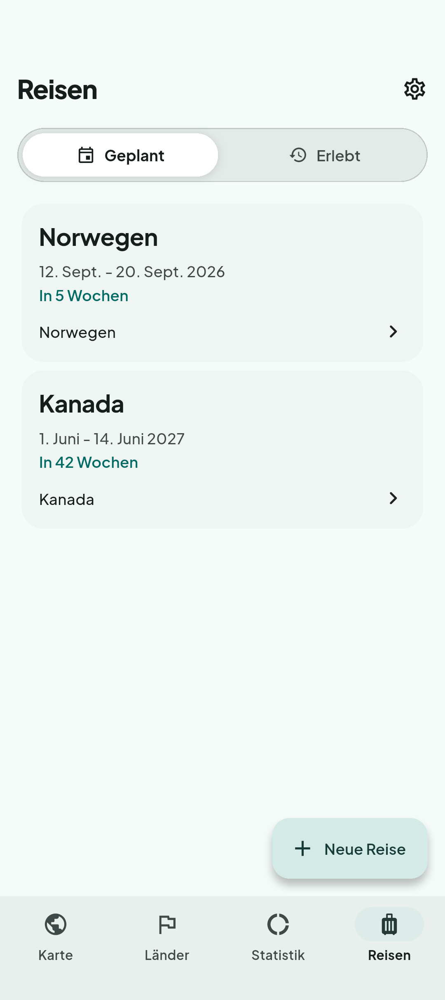
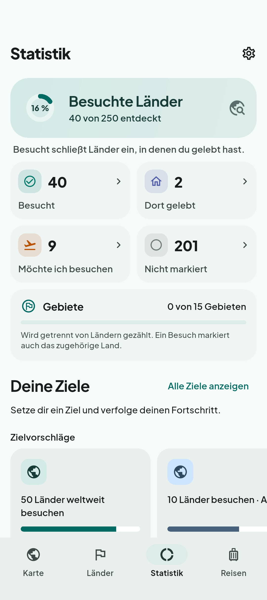

EIN BISSCHEN MEHR VON DER WELT
Deine Reisen.
Deine Erinnerungen.
Deine Weltkarte.
Die Orte, die du entdeckt hast. Die Städte, die sich nach Zuhause anfühlen. Die nächste Reise, auf die du dich freust. Mit Worldpath bleibt alles zusammen.
Ein Blick in die App- Funktioniert offline
- Kein Konto nötig
- Deutsch & Englisch

WORLDPATH
Jede Reise bringt etwas Farbe.
Markiere Länder, Städte und ausgewählte Gebiete als besucht, dort gelebt oder Wunschziel. So erzählt deine Karte deine Reisegeschichte.
- Besucht
- Dort gelebt
- Möchte ich besuchen

DIE NÄCHSTE REISE. UND DIE LETZTE.
Deine Reisen.
Alles an einem Ort.
Ein Wochenende unterwegs oder eine Reise durch mehrere Länder. Halte Stopps, Daten und Verkehrsmittel zusammen fest – getrennt nach geplanten und vergangenen Reisen.
Plane eine Reise. Markiere sie nach deiner Rückkehr als erlebt. Und sieh, wie deine Karte mit deinen Erinnerungen wächst.

DAS GROSSE GANZE SEHEN
Sieh, wie deine
Welt wächst.
Entdecke deine Reisegeschichte mit Länderzahlen, regionalem Fortschritt und einer Zeitleiste. Setze dir ein Reiseziel oder fasse Lieblingsorte in einer Sammlung zusammen.
Es gibt immer noch eine neue Ecke der Welt zu entdecken.

BEREIT FÜR DEINE GESCHICHTE
Wohin führt dich
dein Worldpath?
Deine Reisedaten bleiben auf deinem Gerät. Nutze die App offline, erstelle eine lokale Sicherung und mache dort weiter, wo du aufgehört hast.
Worldpath bei Google Play